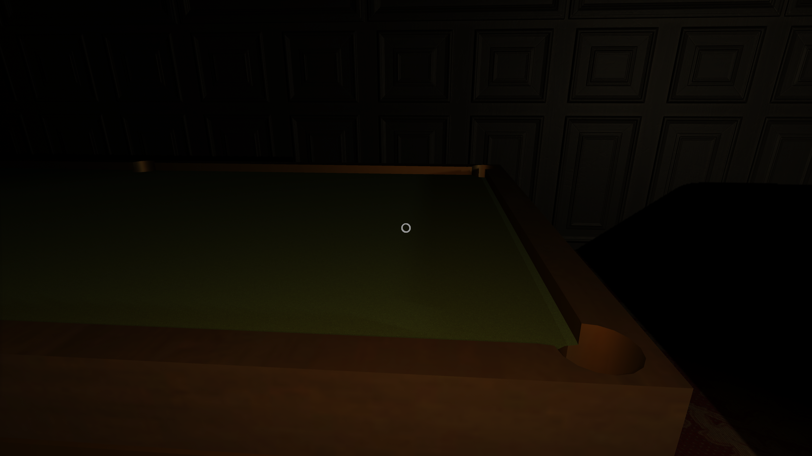

Aroa
Aroa is a first person horror and puzzle game made during a game jam with the theme "Rewind." You find yourself in
a prestigious dark mansion with no idea why you are there. All you know is you want to escape, and you need the front door key.
While the theme for this game was "Rewind," we as a group decided to make the game through the theme "Time" as well. The player's while they explore the mansion will come to find out that they need to keep rewinding the Father Clock, otherwise trouble will arise. The game jam was one week long, and was made in a group of three people. I was the lead map designer and lead programmer.
Engine: Unity
Softwares Used: Visual Studio
Languages: C#
Timeframe: 1 week
Status: Complete
While the theme for this game was "Rewind," we as a group decided to make the game through the theme "Time" as well. The player's while they explore the mansion will come to find out that they need to keep rewinding the Father Clock, otherwise trouble will arise. The game jam was one week long, and was made in a group of three people. I was the lead map designer and lead programmer.
Engine: Unity
Softwares Used: Visual Studio
Languages: C#
Timeframe: 1 week
Status: Complete
My Contributions
Map Design

This game jam was my first experience working with Probuilder in Unity. Using that tool, I created the entire mansion. I also added in all of the 3d models (I did not make the 3d models), wall textures, and various items that you can pick up.
Being the lead map designer, I was also in charge of creating the puzzles inside of the mansion.

Pick up Objects
While not an important mechanic to the game, I decided to add in this ability simply to give the player more control of the environment around them. The player may pick up boxes, and drop them.
Being the lead map designer, I was also in charge of creating the puzzles inside of the mansion.
Rewind Clock
The mechanic of rewinding the clock is critical in Aroa. This allows the player to have a few extra minutes to search the mansion for ways to complete puzzles. If the clock ever reaches its target time, then the player is in trouble.

Chunk Loading
Aroa is a large game. While making the map and adding all of the assets, my group quickly realized that the game itself is very taxing for a computer to handle. So the programmers (me included) created a chunk loading system, essentially making it so the player does not have to load the entire house all the time; just the areas around the player. This allowed for a more efficient runtime experience and greatly reduced the cost of running the game.
Various Pictures
